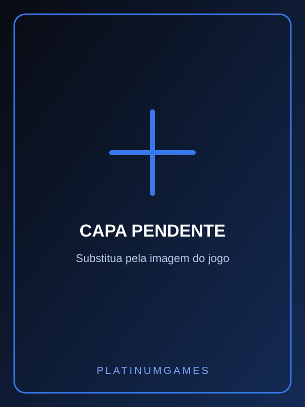

GUIA DE CONQUISTAS
Resident Evil 4 (Remake)

Sobre o jogo
Guia de platina estruturado em campanhas, exploração, colecionáveis, objetivos de classificação e modos adicionais.
Dificuldade: 6/10 · Tempo estimado: 30–40 horas · Troféus: 40 (1 platina, 4 ouro, 10 prata e 25 bronze) · Jogadores: 1
Organização dos troféus
Lista de referência: 40 (1 platina, 4 ouro, 10 prata e 25 bronze).
A página apresenta o total e a distribuição geral informados para esta lista. A relação individual de nomes e descrições poderá ser adicionada em uma atualização posterior.
📌 Ordem recomendada
1️⃣ História principal
- Complete a campanha pela primeira vez.
- Explore a vila, o castelo e a ilha.
- Recolha os tesouros encontrados durante a progressão.
- Complete as solicitações opcionais disponíveis.
- Descubra áreas secretas e conclua a história.
2️⃣ Exploração e colecionáveis
- Encontre todos os tesouros necessários à coleção.
- Localize os Castellans mecânicos.
- Complete as solicitações opcionais do Mercador.
- Encontre os documentos e registros disponíveis.
- Verifique os itens exclusivos de cada capítulo antes de avançar.
3️⃣ Melhorias e coleção
- Consulte os objetivos de aprimoramento e progressão da coleção.
- Desbloqueie os acessórios e itens exigidos pelos troféus, conforme a lista da edição escolhida.
- Confira os requisitos de equipamentos especiais sem deixar objetivos de coleção para trás.
4️⃣ Desafios de classificação
- Planeje as campanhas que exigem classificações específicas.
- Conclua as campanhas Standard e Hardcore com classificação S+, conforme os requisitos da lista de troféus.
- Verifique os limites e condições de cada classificação antes de iniciar uma tentativa.
5️⃣ Desafios de campanha
- Confira os troféus que impõem restrições específicas à campanha.
- Planeje separadamente os objetivos de conclusão com restrições de recursos e serviços.
- Leia individualmente os requisitos de cada troféu antes de iniciar uma nova campanha.
6️⃣ Modos adicionais
- Consulte os objetivos do modo Mercenaries.
- Confira quais desafios adicionais fazem parte da lista da edição escolhida.
- Conclua os requisitos necessários para os troféus da campanha principal.
7️⃣ Limpeza final
- Confira os tesouros e colecionáveis restantes.
- Verifique os Castellans mecânicos por capítulo.
- Complete os desafios pendentes e conquiste os troféus restantes.
- Desbloqueie a platina.
Avisos sobre objetivos perdíveis
- Alguns colecionáveis e objetivos são específicos de capítulos; confira o progresso antes de avançar para a próxima área.
- Não presuma que a seleção de capítulos permitirá recuperar todos os itens ou objetivos perdidos.
- A lista e os requisitos podem variar conforme a plataforma, a edição e os conteúdos adicionais.
Use esta seção como conferência antes de avançar em capítulos, decisões ou etapas irreversíveis.
Colecionáveis e objetivos secundários
- Tesouros espalhados pela vila, castelo e ilha.
- Castellans mecânicos distribuídos pelos capítulos.
- Documentos, registros e solicitações opcionais.
← Voltar à biblioteca